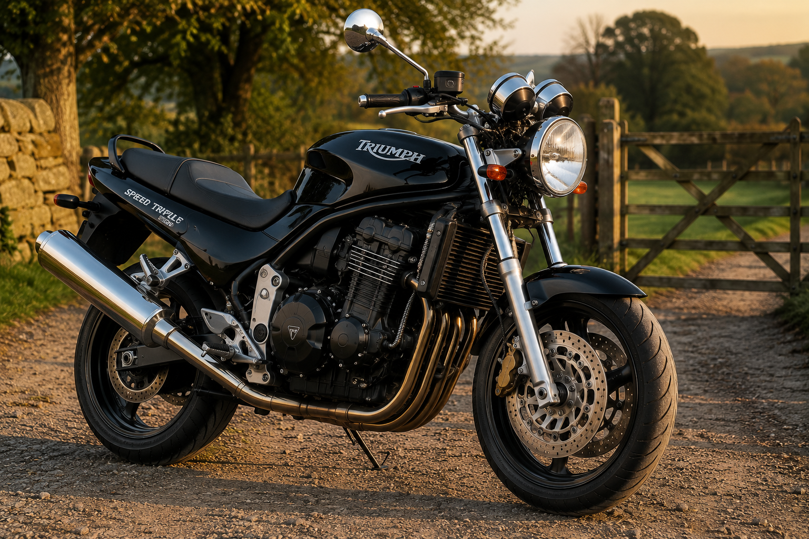
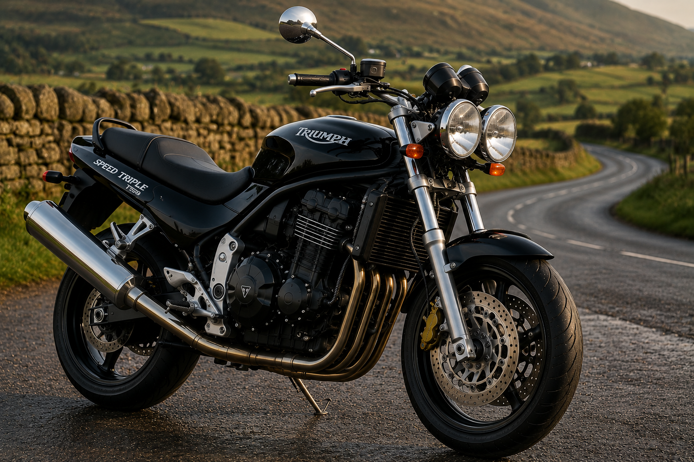
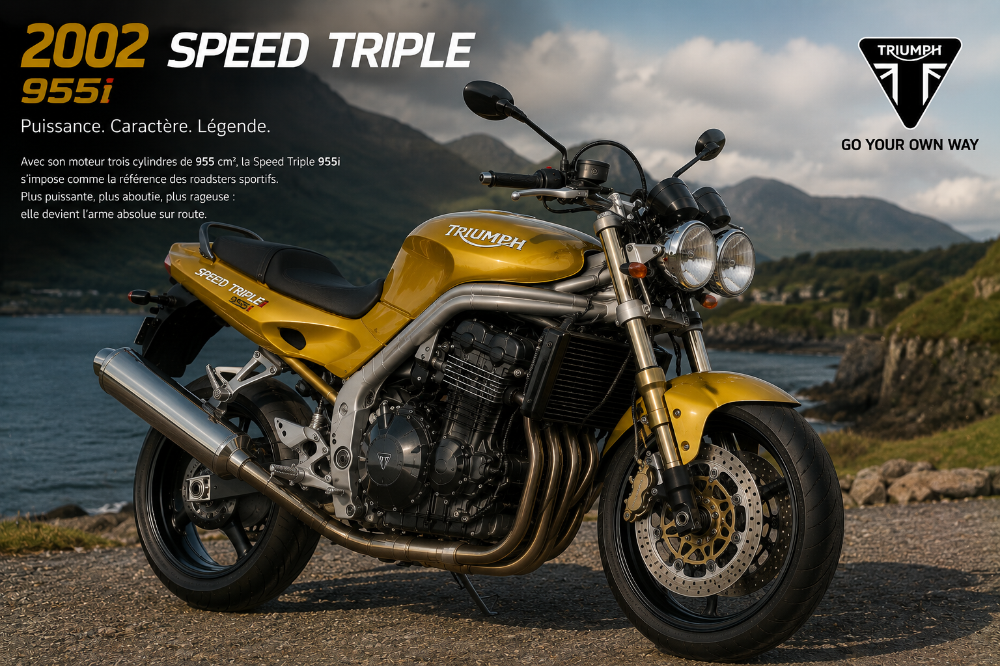
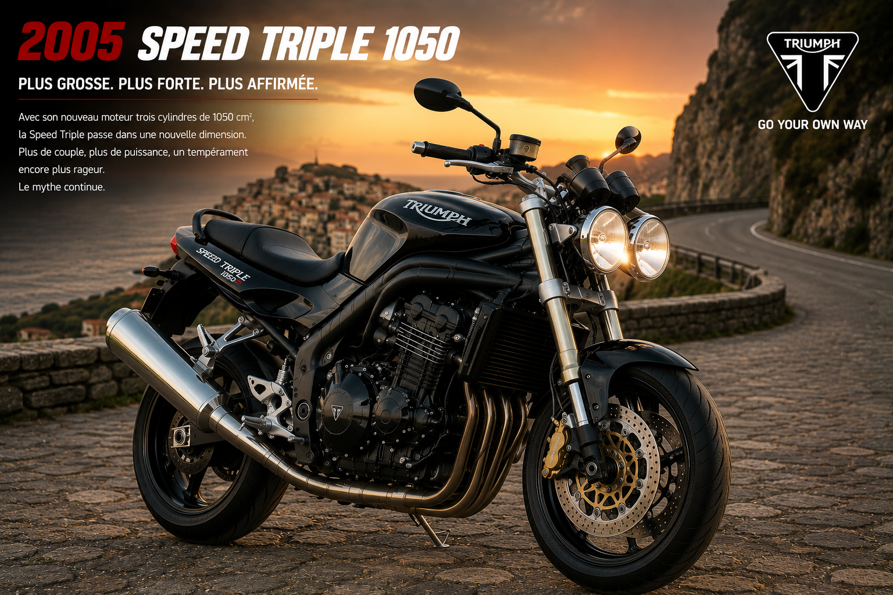
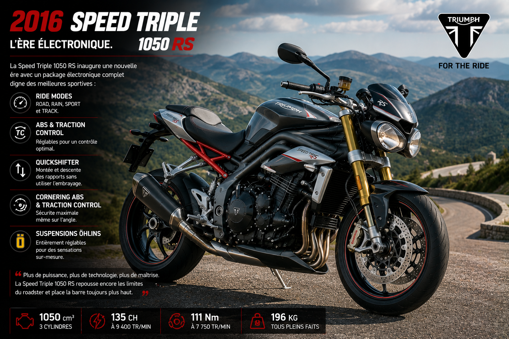
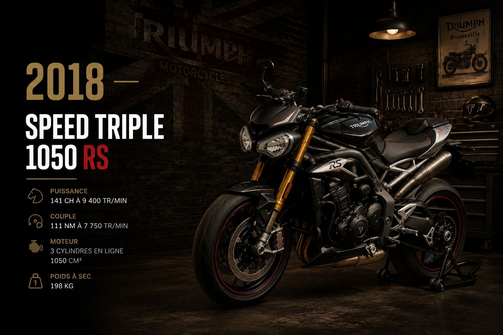
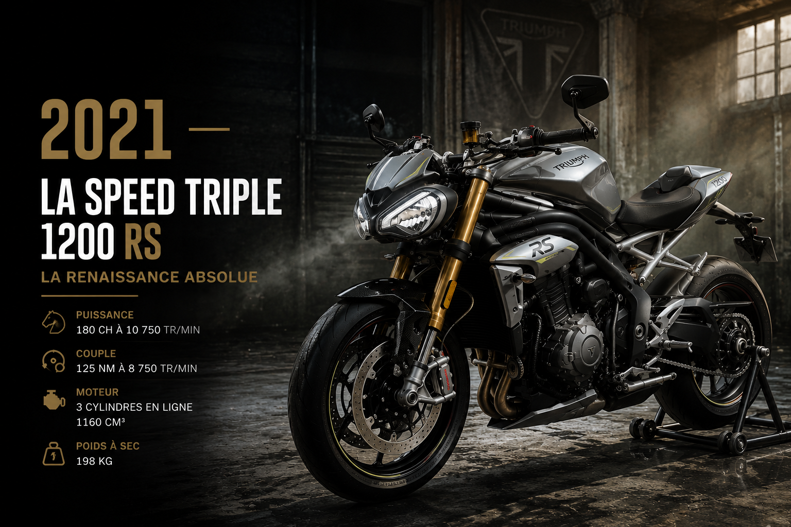
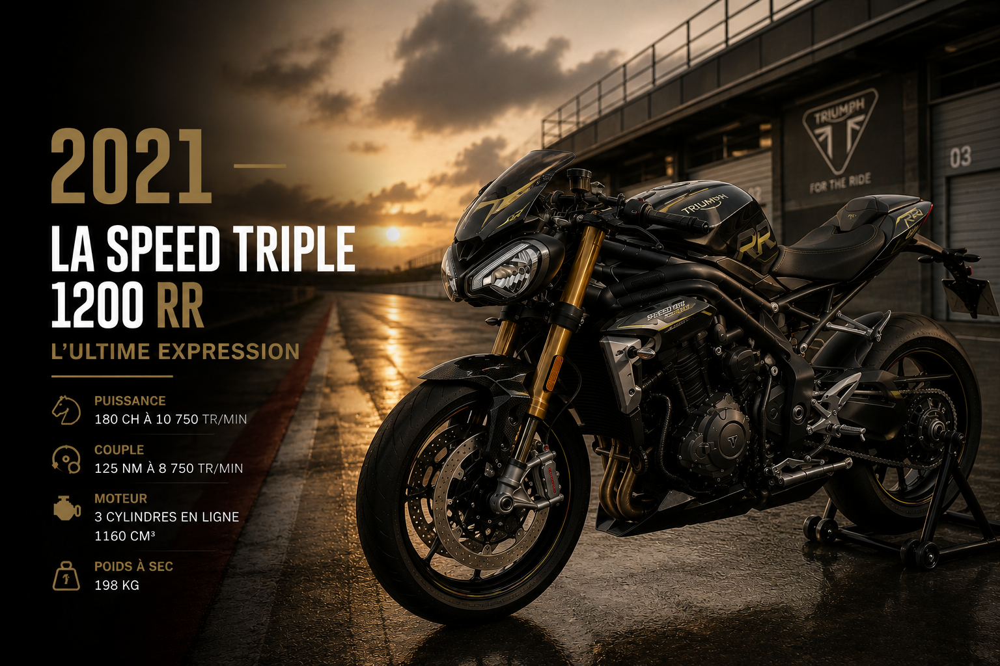

Le Contexte — Hinckley en Pleine Ascension
Quand Triumph décide de tout réinventer
Au début des années 1990, la nouvelle Triumph de John Bloor est en train de trouver ses
marques. Les premières machines sorties de Hinckley — Trident, Trophy, Tiger — ont prouvé
que la marque était de retour, sérieusement. Mais l'équipe de développement veut aller plus
loin. Elle veut une moto qui fasse parler d'elle. Une moto qui surprenne, qui choque même.
L'idée germe naturellement : prendre le moteur trois cylindres de la Daytona sportive,
lui enlever tout le carénage, abaisser le guidon, durcir la position de conduite, et livrer
la mécanique à nu. Une moto sans fard, sans filet, sans compromis. Un outil de sensations
pures. On l'appelle encore informellement "le projet naked" dans les couloirs de Hinckley.
Le nom définitif viendra naturellement : Speed Triple. La vitesse. Le trois
cylindres. Deux mots, un programme entier.
1994 — La Speed Triple T300 : La Fondatrice
La moto qui a créé un genre

En 1994, Triumph présente au monde la Speed Triple T300.
L'effet est immédiat et électrique. Dans un marché dominé par les sportives carénées
japonaises et les customs américaines, cette moto débarque comme une bombe.
Le moteur est le trois cylindres en ligne de 885 cm³ issu de la Daytona,
mais reconfiguré pour le caractère plutôt que pour la puissance maximale. Il développe
97 chevaux — déjà impressionnant pour l'époque — mais surtout un couple
généreux et disponible dès les bas régimes. En ville, sur route sinueuse, au quotidien,
ce moteur est une fête permanente.
La carrosserie se résume à l'essentiel : un phare rond, un réservoir musclé, une selle
enveloppante, et c'est tout. Pas de carénage, pas de plexi, pas de cache pour masquer la
mécanique. Les tuyaux d'échappement courent le long du cadre de manière ostensiblement visible.
Le cadre lui-même est mis en valeur. C'est une déclaration esthétique radicale : la beauté
de la machine vient de sa mécanique exposée, pas de carrosseries en plastique cachant tout.
La position de conduite est tendue, sportive, quasi-agressive. Le guidon est bas, le pilote
penché vers l'avant, les poignets dans l'axe des roues. Dès qu'on l'enfourche, on comprend
que cette moto ne s'intéresse pas au confort de croisière. Elle veut du mouvement, de l'action,
de l'engagement.
La presse spécialisée est sous le choc. Certains journalistes parlent d'un nouveau standard,
d'une machine qui redéfinit ce qu'un roadster peut être. Ils ont raison. Yamaha, Honda,
Kawasaki — tous vont dans les années suivantes lancer leur propre naked sportif. Tous
chercheront à répondre à la Speed Triple. Aucun ne trouvera exactement la même réponse.
1997 — La Speed Triple T509 : Les Yeux qui Font Peur
Deux phares, une gueule, une icône visuelle

En 1997, Triumph réinvente la Speed Triple de fond en comble. Et cette
version va frapper les esprits d'une manière que personne n'anticipait. C'est la
T509 — et elle va entrer dans la légende pour une raison très précise :
ses deux phares ronds.
Ces deux yeux lumineux, côte à côte, donnent à la moto un regard inhumain, presque animal.
Un regard de prédateur qui vous fixe dans le rétroviseur ou depuis le fond d'un virage.
Ce design — simple, brutal, immédiatement mémorable — deviendra la signature visuelle
absolue de la Speed Triple pour toutes les générations suivantes. Trente ans plus tard,
on reconnaît encore une Speed Triple à ses phares ronds avant même de voir le reste.
Mais la T509 n'est pas qu'une question de style. Sous la peau, tout est nouveau. Le moteur
est un trois cylindres entièrement revu de 955 cm³, à injection électronique
— une première sur une naked. Il développe 108 chevaux et un couple
disponible, généreux, présent à tous les régimes. La puissance de ce moteur, couplée au
poids contenu de la machine, donne des performances de haut vol.
Le châssis est lui aussi entièrement repensé : cadre tubulaire acier haute résistance,
fourche inversée Showa, mono-amortisseur réglable. La T509 se comporte sur route avec une
précision et une communication que ses contemporaines naked ne peuvent pas égaler. Elle
tourne, plonge en virage, informe en permanence le pilote de l'état de la route.
La T509 est la Speed Triple qui impose définitivement le modèle dans l'histoire de la moto.
Elle se vend bien, passionne les pilotes, et fait du Speed Triple un mythe vivant.
2002 — La Speed Triple 955i : La Confirmation Tranquille
Affiner sans trahir

En 2002, Triumph fait évoluer la Speed Triple sans révolutionner sa recette.
La 955i — le "i" pour injection — affine ce que la T509 avait posé.
C'est le travail de l'orfèvre sur un diamètre déjà bien taillé.
Le moteur 955 cm³ reçoit une nouvelle cartographie électronique qui améliore la réponse
à l'accélérateur, rend la livraison de puissance plus progressive et plus agréable au
quotidien. Le couple en bas de régime est encore amélioré. En ville, dans les bouchons,
sur les nationales, ce moteur est d'une souplesse étonnante pour une machine aussi musclée.
Les suspensions sont revues, les réglages affinés. Les freins reçoivent de nouveaux étriers
Nissin plus mordants. L'ergonomie est légèrement revue pour offrir un compromis légèrement
plus favorable sur les longues distances, sans abandonner le caractère sportif et tendu qui
fait l'ADN de la machine.
La 955i sera produite et mise à jour jusqu'en 2004. Elle représente la
maturité de la première génération de Speed Triple moderne. Une moto fiable, caractérielle,
adulée par ses propriétaires, qui commence à voir son nom passer de modèle en modèle comme
on se transmet un héritage de famille.
2005 — La Speed Triple 1050 : Le Changement de Dimension
Plus de cylindrée, plus de caractère, plus d'everything

2005. Triumph décide de passer à la vitesse supérieure — littéralement.
La Speed Triple abandonne son trois cylindres 955 cm³ pour un tout nouveau moteur de
1050 cm³, développant 130 chevaux et un couple de
105 Nm. Ce bond en avant change profondément la nature de la machine.
Ce nouveau moteur est un chef-d'œuvre de caractère. Son architecture trois cylindres lui
confère cette sonorité unique — grave à bas régime, elle monte en crescendo pour exploser
dans les tours avec un hurlement qui fait se retourner les têtes sur la route. Le couple
disponible dès 3 000 tr/min est impressionnant : on peut négocier les
ronds-points en quatrième sans même rétrograder, et accélérer ensuite avec une violence
douce et progressive qui colle le pilote à la selle.
Le design évolue tout en conservant l'essentiel. Les deux phares ronds sont toujours là,
regard de rapace immuable. Mais les lignes sont plus musclées, plus tendues, plus modernes.
Le réservoir prend du volume. La selle est redessinée. Les silencieux se repositionnent
sous la queue pour améliorer la centralisation des masses et donner à l'arrière une allure
plus ramassée.
Les suspensions sont désormais des Kayaba entièrement réglables. Les freins sont des
disques pétales mordants associés à des étriers radiaux. L'ABS est disponible en option —
une première sur une Speed Triple, et une sage décision pour une machine de cette puissance.
La 1050 remporte immédiatement les suffrages. Elle est sacrée "Moto de l'Année"
par plusieurs magazines européens dès sa sortie. Les ventes progressent fortement. La Speed
Triple s'impose comme la référence absolue du segment naked sportif, une position qu'elle
ne quittera plus.
2007–2010 — La Speed Triple 1050 : Évolutions et Raffinements
La construction d'une légende moderne

Entre 2007 et 2010, Triumph affine continuellement sa Speed Triple 1050
sans en changer la philosophie fondamentale. C'est une période de maturation tranquille
mais efficace.
En 2007, le moteur reçoit une nouvelle culasse et un allumage retravaillé
qui améliore encore la réponse à bas régime. L'injection électronique est reprogrammée pour
supprimer les à-coups parfois présents sur les premières versions. La machine gagne en
fluidité sans rien perdre de son caractère.
En 2008, le contrôle de traction fait son apparition sur la Speed Triple —
une aide précieuse sur une machine développant 130 chevaux avec autant de couple. Cette
électronique reste discrète et peu intrusive : elle intervient uniquement quand c'est
nécessaire, sans filtrer les sensations que le pilote est venu chercher.
Ces années sont aussi celles où la Speed Triple devient une icône de la culture moto
européenne. On la voit partout : dans les magazines, dans les films, aux mains des
instructeurs de conduite sportive, dans les garages des passionnés qui la personnalisent
avec des accessoires Triumph Racing et des pièces aftermarket. Elle génère un véritable
écosystème de passionnés.
2011 — La Speed Triple R : La Perfection à la Portée des Circuits
Öhlins, Brembo, et un niveau au-dessus

En 2011, Triumph lance ce que beaucoup considèrent comme la Speed Triple
ultime de sa génération : la Speed Triple R. Avec ce modèle, la marque
sort clairement de la route pour viser directement les circuits.
L'équipement de la R est celui qu'on trouve sur des machines de compétition. La fourche
avant est une Öhlins NIX30 à cartouche, entièrement réglable en
compression, détente et précontrainte — une pièce de référence utilisée par les équipes
de course du monde entier. L'amortisseur arrière est également un Öhlins TTX36,
réglable en tout point.
Les freins sont des Brembo monoblocs radiaux, considérés à l'époque
comme le nec plus ultra du freinage moto. Mordants, progressifs, capables d'absorber
des freinages répétés sur circuit sans fading, ils offrent un niveau de confiance
exceptionnel. Les disques avant passent à 320 mm pour une puissance de
freinage maximale.
Le moteur reste le 1050 cm³, mais reçoit un filtre à air modifié et un pot d'échappement
Arrow en option qui libère quelques chevaux supplémentaires et produit une sonorité encore
plus spectaculaire. Sur circuit, la Speed Triple R révèle des qualités dynamiques
exceptionnelles : rapide en ligne droite, précise en entrée de virage, rassurante en
limite d'adhérence.
La Speed Triple R convainc ceux qui doutaient encore qu'une naked pouvait être une vraie
moto de circuit. Elle sera régulièrement utilisée lors de journées piste par des pilotes
expérimentés, se comportant souvent mieux que des sportives carénées bien plus chères.
2016 — La Speed Triple 1050 RS : L'ère Électronique
La technologie au service du plaisir

En 2016, Triumph opère une mise à jour majeure de la Speed Triple et
introduit la variante RS — pour Racing Sport. Cette version incarne
la transition de la Speed Triple vers l'ère de l'électronique sophistiquée, sans jamais
perdre son caractère sauvage.
Le moteur 1050 cm³ est mis aux nouvelles normes d'émission Euro 4 tout en progressant
en puissance : 141 chevaux à 9 400 tr/min et
111 Nm de couple. Le gain est sensible. La courbe de puissance est
affinée pour maximiser l'agrément dans toutes les situations.
L'électronique fait un bond en avant spectaculaire. La RS embarque désormais un
contrôle de traction à cinq niveaux, un anti-wheelie réglable,
et plusieurs modes de conduite (Road, Rain, Sport, Track) qui modifient
la cartographie moteur, la sensibilité du contrôle de traction et la réponse à l'accélérateur.
Un écran TFT couleur remplace les anciens cadrans analogiques, offrant une lisibilité et
une quantité d'informations sans précédent.
L'équipement RS reprend les meilleures pièces de la version R : fourche Öhlins,
amortisseur Öhlins, freins Brembo. L'ensemble forme une moto d'une cohérence remarquable,
capable de se montrer docile en ville le matin et absolument féroce sur circuit l'après-midi.
2018 — La Speed Triple 1050 RS : Nouvelles Normes, Même Âme
Euro 4 et l'affinage continu

En 2018, la Speed Triple RS reçoit une série de mises à jour techniques
destinées à maintenir son avance sur la concurrence et à répondre aux nouvelles exigences
réglementaires européennes. Triumph ne se contente pas du minimum — la marque en profite
pour affiner encore la machine.
La gestion électronique est reprogrammée. Les ingénieurs de Hinckley ont travaillé sur
la linearité de la réponse à l'accélérateur — ce point précis où la
commande de la main droite se traduit en accélération. Sur les versions précédentes,
certains pilotes notaient une légère nervosité à la réouverture des gaz. Ce défaut est
corrigé. La 2018 est plus fluide, plus prévisible, plus facile à doser en limite d'adhérence.
Les suspensions reçoivent de nouveaux réglages de série plus adaptés à une utilisation
mixte route/circuit. Le poids à sec descend légèrement à 189 kg grâce
à quelques pièces optimisées. Chaque kilogramme gagné se ressent immédiatement dans les
changements de direction et la vivacité générale de la machine.
2021 — La Speed Triple 1200 RS : La Renaissance Absolue
La moto la plus ambitieuse de l'histoire de la série

Janvier 2021. Triumph frappe le plus grand coup de l'histoire de la
Speed Triple. La marque présente une machine entièrement nouvelle, de zéro, sans aucun
compromis. La Speed Triple 1200 RS est une révolution — la plus grande
rupture dans l'histoire du modèle depuis la T509 de 1997.
Le moteur est entièrement nouveau. Un trois cylindres de 1 160 cm³
— la cylindrée a légèrement diminué par rapport au 1050, mais tout le reste a progressé.
180 chevaux à 10 750 tr/min.
125 Nm de couple à 9 000 tr/min. C'est une puissance
qui place la Speed Triple dans la catégorie des hypernaked les plus puissantes du monde,
aux côtés de l'Aprilia Tuono V4 et de la BMW M 1000 R.
Ce moteur est l'un des plus beaux jamais construits par Triumph. Sa sonorité, déjà unique
en 1050, atteint ici un niveau supérieur. À bas régime, il ronronne avec autorité. À
mi-régime, il pousse avec une régularité et une amplitude qui font sourire. Au-delà de
8 000 tr/min, il entre dans une zone de puissance pure et de sons qui donne la chair de poule.
Les propriétaires racontent tous la même chose : la première fois qu'ils ont poussé le
1200 RS à fond sur une voie rapide dégagée, ils ont eu un grand sourire et les larmes aux yeux.
Le châssis est à la hauteur de ce moteur extraordinaire. Le cadre est un treillis en acier
à haute résistance, repensé intégralement pour maximiser la rigidité et minimiser le poids.
La fourche avant est une Öhlins NIX30 de 43 mm. L'amortisseur arrière est
un Öhlins TTX36. Les freins sont des Brembo Stylema —
le même étrier qu'on trouve sur les Ducati Panigale V4 — associés à des disques de
320 mm. Le poids total tombe à 198 kg plein de carburant.
Rapport puissance/poids : exceptionnel.
L'électronique atteint un niveau qu'on n'attendait pas sur une naked britannique.
L'IMU Bosch à 6 axes gère en temps réel l'ABS cornering, le contrôle
de traction angle-sensible, l'anti-wheelie et le contrôle d'accélération.
Quatre modes de conduite — Road, Rain, Sport, Track — auxquels s'ajoute un mode
Track (sans ABS) pour les puristes sur circuit. Tout est configurable
en profondeur depuis l'écran TFT de 5 pouces couleur.
Le design est une évolution assumée et magnifique de la lignée Speed Triple. Les deux phares
ronds sont toujours là — ils ne partiront jamais, c'est sacré — mais ils sont désormais
en full LED avec des DRL en forme d'anneau lumineux qui donnent un regard encore plus
intense. La ligne générale est plus compacte, plus ramassée, plus musclée. La queue courte
et relevée, les silencieux positionnés haut sous la queue, le réservoir aux formes organiques
— chaque détail est pensé, cohérent, beau.
La presse mondiale s'emballe. Motorcycle News, Motorrad, Moto Journal —
tous placent la 1200 RS dans le top de leur palmarès annuel. Les comparatifs la couronnent
systématiquement dans la catégorie hypernaked. Les pilotes d'essai, habitués aux machines
les plus exclusives du marché, parlent d'une moto d'exception, d'un moment charnière dans
l'histoire du roadster sportif.
2021 — La Speed Triple 1200 RR : L'Ultime Expression
Quand la naked devient œuvre d'art

Dans la même année, Triumph va encore plus loin en lançant la Speed Triple 1200 RR.
Si la RS est déjà une machine d'exception, la RR est quelque chose d'autre — une édition
spéciale au positionnement unique qui mélange les codes du café-racer, du roadster et de
la sportive d'élite dans un cocktail visuellement renversant.
La RR reprend toute la mécanique de la RS — le moteur 1200, les suspensions Öhlins, les
freins Brembo Stylema, l'électronique complète — mais y ajoute un habillage spécifique
bluffant. Un demi-carénage en carbone enveloppe partiellement le bloc moteur. Un saute-vent
court oriente le regard vers l'avant. La selle est redessinée dans un style plus rétro et
racé. La livrée Sapphire Black & Carbon Black, avec ses effets de matière, est d'une
élégance absolue.
Les jantes sont des roues forgées OZ Racing — légères, solides, et d'une
beauté spectaculaire. Les repose-pieds sont des pièces usinées dans la masse en aluminium
anodisé. Chaque vis, chaque prise d'air, chaque raccord est traité comme un détail précieux.
La RR est produite en série limitée. Elle s'adresse à ceux qui veulent la
moto la plus exclusive, la plus désirable, la plus personnelle. Une pièce unique autant qu'une
machine à conduire. Les exemplaires s'arrachent en quelques jours à chaque nouvelle commande.
Sur le marché de l'occasion, les cotes s'envolent.
L'ADN Speed Triple — Ce Qui Fait la Différence
Trente ans de caractère inimitable
Depuis 1994, la Speed Triple a traversé sept générations de moteurs, cinq générations de
châssis, et une révolution électronique complète. Pourtant, chaque Speed Triple — de la
T300 de 1994 à la 1200 RR de 2021 — partage la même âme profonde. Ce sont ces constantes
qui définissent le modèle au-delà des chiffres et des millésimes.
Le trois cylindres comme identité sonore. Aucune Speed Triple n'a jamais
eu un moteur bicylindre ou quatre cylindres. Ce choix architectural, maintenu depuis trente
ans, donne à chaque machine de la série une sonorité immédiatement reconnaissable. On entend
une Speed Triple avant de la voir. Cette voix unique — grave, ronde, explosive — est
indissociable du personnage.
Les deux phares ronds. Apparus sur la T509 en 1997, ils n'ont jamais disparu.
À chaque nouvelle génération, les ingénieurs et designers de Triumph auraient pu opter pour
autre chose. Ils ne l'ont jamais fait. Ces deux phares sont devenus la signature visuelle
la plus forte de la gamme, un élément d'identité qu'aucun acheteur ne confond jamais.
La position de conduite engagée. Une Speed Triple ne vous place jamais dans
un fauteuil. Dès que vous l'enfourchez, le corps penche légèrement vers l'avant, les bras
en position active, les genoux en contact avec le réservoir. Cette posture n'est pas punitive —
elle est engagée. Elle met le pilote en mode conduite immédiatement. C'est une invitation
permanente à l'action.
Le caractère avant la facilité. Triumph a toujours préféré que la Speed
Triple ait du tempérament plutôt que d'être facile. Les premières générations étaient
exigeantes, parfois capricieuses. Les dernières sont plus accessibles grâce à l'électronique,
mais elles n'ont rien perdu de leur mordant. Quand vous désactivez les aides et que vous
ouvrez les gaz à mi-virage sur une 1200 RS, vous comprenez immédiatement que vous êtes aux
commandes de quelque chose de vivant.
Épilogue — La Reine des Rues
Trente ans. Trente ans que la Speed Triple règne sur le segment naked sportif qu'elle a
elle-même créé. Trente ans à évoluer, à se réinventer, à repousser les limites de ce qu'une
moto sans carénage peut accomplir. Et pourtant, chaque Speed Triple reste reconnaissable
comme telle — dans sa ligne, dans son son, dans son tempérament.
C'est cela, la vraie réussite de Triumph avec ce modèle. Dans un marché où les constructeurs
changent parfois d'identité à chaque génération pour suivre les modes, la Speed Triple a
toujours su évoluer sans se trahir. Elle est plus puissante, plus technique, plus équipée
qu'en 1994 — mais elle est toujours la même moto dans l'esprit. La même vision, le même
credo, la même promesse.
Enfourchez une Speed Triple. Démarrez le moteur. Fermez les yeux une seconde et écoutez
ce trois cylindres qui gronde, qui respire, qui attend. Puis ouvrez les gaz.
Vous comprendrez tout, immédiatement.
For the Ride.